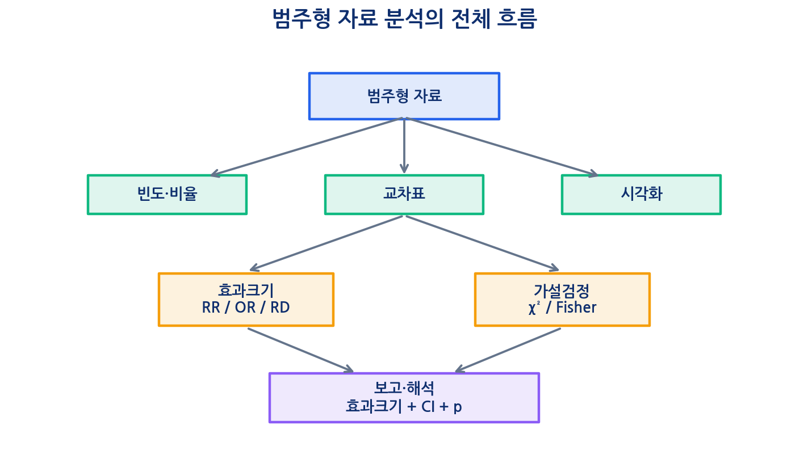
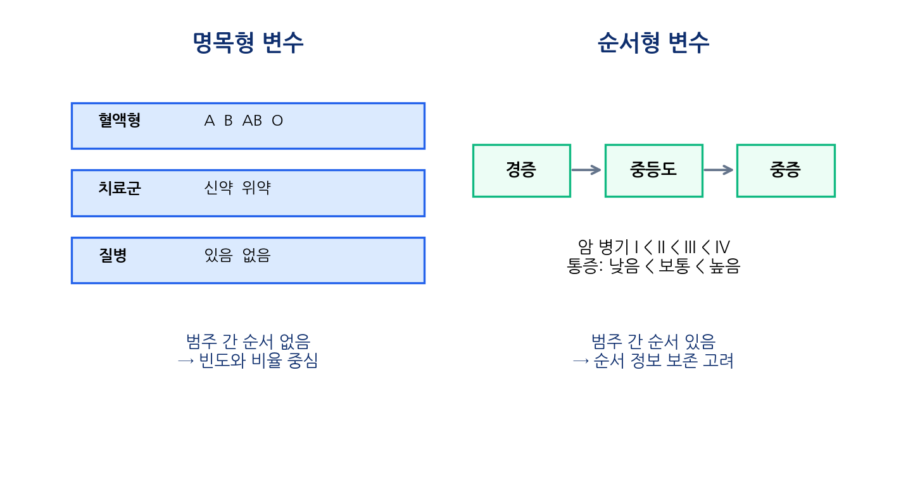
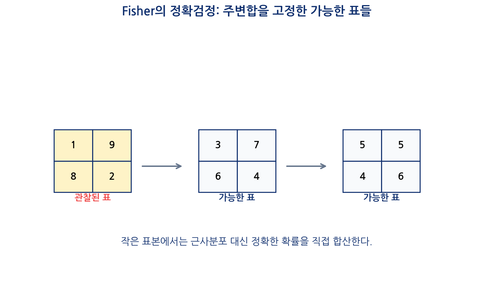

이번 장에서는 범주형 자료(categorical data)를 분석하는 방법을 학습한다. 지금까지는 평균, 표준편차, 정규분포, 신뢰구간, t-test를 통해 주로 연속형 결과변수를 다루었다. 그러나 실제 의학 연구에서는 결과가 숫자로 연속적으로 측정되는 경우만큼이나, 몇 개의 범주로 나뉘는 경우가 매우 많다.
예를 들어 다음과 같은 결과는 모두 범주형 자료이다.
질병 있음 / 질병 없음
사망 / 생존
치료 반응 있음 / 없음
검사 양성 / 음성
부작용 발생 / 미발생
흡연자 / 비흡연자
암 병기 I / II / III / IV
증상 정도: 경증 / 중등도 / 중증
이러한 자료는 평균과 표준편차로 요약하기 어렵다. 예를 들어 치료 반응 여부가 “반응” 또는 “무반응”으로 기록되어 있다면, 이 자료의 핵심은 평균이 아니라 몇 명이 반응했는가, 몇 퍼센트가 반응했는가, 두 집단의 반응률이 다른가이다.
따라서 범주형 자료 분석에서는 다음 도구들이 중요하다.
빈도와 비율
교차표
행 비율과 열 비율
위험, 오즈, 위험비, 오즈비
카이제곱검정
Fisher의 정확검정
민감도, 특이도, 양성예측도, 음성예측도
범주형 결과의 신뢰구간과 p-value 해석

범주형 자료 분석의 출발점은 “몇 명인가?”와 “몇 퍼센트인가?”이다. 그 다음 질문은 “그 차이가 우연으로 설명 가능한가?”와 “그 차이가 얼마나 큰가?”이다.
10.2 핵심 질문
이번 장에서는 다음 질문에 답한다.
범주형 변수는 연속형 변수와 어떻게 다른가?
명목형 변수와 순서형 변수는 어떻게 구분하는가?
범주형 자료는 왜 평균이 아니라 빈도와 비율로 요약하는가?
교차표에서 행 비율과 열 비율은 각각 언제 해석하는가?
위험과 오즈는 어떻게 다른가?
위험비와 오즈비는 어떻게 계산하고 해석하는가?
사건이 흔할 때 오즈비를 위험비처럼 해석하면 왜 문제가 되는가?
카이제곱검정은 어떤 원리로 두 범주형 변수의 관련성을 평가하는가?
Fisher의 정확검정은 언제 필요한가?
범주형 자료 분석 결과를 논문에서는 어떻게 보고해야 하는가?
10.3 학습목표
이번 수업이 끝나면 학생들은 다음을 할 수 있어야 한다.
범주형 변수의 종류를 명목형과 순서형으로 구분할 수 있다.
빈도와 비율을 이용해 범주형 자료를 요약할 수 있다.
2×2 표를 구성하고 각 셀의 의미를 설명할 수 있다.
행 비율, 열 비율, 전체 비율을 구분하여 해석할 수 있다.
위험, 오즈, 위험비, 오즈비를 계산할 수 있다.
위험비와 오즈비의 차이를 설명할 수 있다.
카이제곱검정의 귀무가설, 기대빈도, 검정통계량을 설명할 수 있다.
Fisher의 정확검정이 필요한 상황을 판단할 수 있다.
R을 이용해 범주형 자료 분석을 수행할 수 있다.
의학 논문에서 범주형 결과표를 읽고 효과크기와 p-value를 해석할 수 있다.
10.4 범주형 변수란?
범주형 변수는 관찰값이 몇 개의 범주(category) 중 하나로 기록되는 변수이다. 범주형 자료에서는 숫자 자체보다 분류된 상태가 중요하다.
예를 들어 성별을 1과 2로 코딩했다고 하자.
코딩값
의미
1
남성
2
여성
여기서 2가 1보다 “두 배 크다”는 의미는 없다. 숫자는 단지 범주를 표시하기 위한 코드일 뿐이다. 따라서 범주형 변수를 분석할 때는 숫자 크기가 아니라 각 범주의 빈도와 비율을 해석해야 한다.
의학 연구에서 자주 등장하는 범주형 변수는 다음과 같다.
변수
가능한 범주
연구 질문 예
질병 여부
있음 / 없음
노출군과 비노출군의 질병 발생률이 다른가?
치료 반응
반응 / 무반응
신약군의 반응률이 위약군보다 높은가?
사망 여부
사망 / 생존
치료군 간 사망률이 다른가?
검사 결과
양성 / 음성
검사 결과가 실제 질병 상태와 얼마나 일치하는가?
흡연 상태
흡연 / 비흡연 / 과거흡연
흡연 상태와 질병 위험이 관련되는가?
암 병기
I / II / III / IV
병기가 높을수록 사망률이 증가하는가?
범주형 변수는 보통 명목형 변수와 순서형 변수로 나뉜다.

10.5 명목형 변수와 순서형 변수
10.5.1 명목형 변수
명목형 변수(nominal variable)는 범주 사이에 자연스러운 순서가 없는 변수이다.
예를 들어 혈액형은 A, B, AB, O로 구분되지만, A가 B보다 크거나 작다고 말할 수 없다. 치료군도 신약군과 위약군으로 나뉘지만, 두 범주 사이에 크기 순서가 있는 것은 아니다.
명목형 변수의 예는 다음과 같다.
변수
범주
특징
혈액형
A, B, AB, O
순서 없음
치료군
신약군, 위약군
순서 없음
질병 여부
있음, 없음
이분형 명목 변수
검사 결과
양성, 음성
이분형 명목 변수
병원 종류
상급종합, 종합, 의원
분석 목적에 따라 명목형 또는 순서형 가능
명목형 변수는 주로 빈도, 비율, 교차표로 요약한다.
10.5.2 순서형 변수
순서형 변수(ordinal variable)는 범주 사이에 순서가 있는 변수이다. 그러나 범주 간 간격이 반드시 같다고 볼 수는 없다.
예를 들어 통증 정도가 경증, 중등도, 중증으로 기록되어 있다면 중증이 중등도보다 심하다는 순서는 있다. 하지만 경증에서 중등도로 증가하는 정도와 중등도에서 중증으로 증가하는 정도가 같은 간격이라고 단정할 수는 없다.
순서형 변수의 예는 다음과 같다.
변수
범주
순서
암 병기
I, II, III, IV
I < II < III < IV
통증 정도
경증, 중등도, 중증
경증 < 중등도 < 중증
만족도
낮음, 보통, 높음
낮음 < 보통 < 높음
ECOG performance status
0, 1, 2, 3, 4
0이 가장 양호
부작용 등급
Grade 1–5
등급이 높을수록 중증
순서형 변수는 단순히 명목형처럼 분석할 수도 있지만, 순서 정보를 활용하면 더 효율적인 분석이 가능할 수 있다. 다만 입문 수준에서는 우선 빈도표와 교차표로 요약하는 방법을 익히는 것이 중요하다.
10.6 이분형 변수
의학 연구에서 특히 중요한 범주형 변수는 이분형 변수(binary variable)이다. 이분형 변수는 가능한 값이 두 개인 변수이다.
기대빈도에 대한 실무적 기준은 교재나 분야에 따라 조금 다르지만, 입문 수준에서는 다음처럼 기억하면 충분하다.
상황
권장 접근
모든 기대빈도가 충분히 큼
카이제곱검정 사용 가능
일부 기대빈도가 작음
Fisher의 정확검정 고려
표본 크기가 매우 작음
Fisher의 정확검정 우선 고려
같은 대상자를 반복 측정함
독립성 위반, McNemar 검정 등 고려
카이제곱검정은 근사검정이다. 표본 크기가 충분할 때 카이제곱분포 근사가 잘 작동한다.
10.23 Fisher의 정확검정
Fisher의 정확검정(Fisher’s exact test)은 표본 크기가 작거나 기대빈도가 작을 때 사용하는 검정이다.
예를 들어 다음 표를 보자.
사건 있음
사건 없음
치료군
1
9
대조군
8
2
이 표는 셀 빈도가 작다. 이런 경우 카이제곱검정의 근사 p-value가 부정확할 수 있다. Fisher의 정확검정은 가능한 표들의 확률을 정확히 계산하여 p-value를 구한다.

Fisher의 정확검정은 특히 다음 상황에서 유용하다.
전체 표본 크기가 작다.
2×2 표의 셀 빈도가 작다.
기대빈도가 5보다 작은 셀이 있다.
희귀 사건을 다룬다.
10.24 카이제곱검정과 Fisher 검정 선택
실무에서는 다음과 같이 선택할 수 있다.
자료 상황
권장 검정
표본 크기가 충분히 크고 기대빈도가 충분함
카이제곱검정
2×2 표에서 셀 빈도 또는 기대빈도가 작음
Fisher의 정확검정
범주가 3개 이상이고 표본이 충분함
카이제곱검정
같은 대상자의 전후 이분형 결과
McNemar 검정
순서형 범주의 선형 추세를 보고 싶음
추세 검정 또는 순서형 방법
중요한 것은 어떤 검정을 쓰든 p-value만 보고 끝내지 않는 것이다. 반드시 빈도, 비율, 효과크기, 신뢰구간을 함께 제시해야 한다.
10.25 독립사건 검정과 동질성 검정
카이제곱검정은 상황에 따라 두 가지 방식으로 설명된다.
10.25.1 독립성 검정
하나의 표본에서 두 범주형 변수가 서로 관련되는지 평가한다.
예:
흡연 여부와 폐암 발생 여부는 관련이 있는가?
이때 귀무가설은 두 변수가 독립이라는 것이다.
10.25.2 동질성 검정
여러 집단에서 범주의 분포가 같은지 비교한다.
예:
치료군과 대조군의 반응률 분포가 같은가?
수학적으로는 같은 카이제곱검정이 사용되지만, 연구 설계와 해석이 조금 다르다. 실제 논문에서는 “그룹 간 비율 차이를 카이제곱검정으로 비교했다”라고 표현하는 경우가 많다.
10.26 McNemar 검정
지금까지의 카이제곱검정과 Fisher의 정확검정은 두 집단이 서로 독립이라고 가정한다. 그러나 같은 대상자에게 치료 전후로 이분형 결과를 측정하거나, 짝지어진 자료를 비교하는 경우에는 독립성이 성립하지 않는다.
예를 들어 같은 환자 100명에게 치료 전후 검사 결과를 측정했다고 하자.
치료 후 양성
치료 후 음성
치료 전 양성
20
30
치료 전 음성
10
40
이 표에서 관심은 일치한 셀인 20과 40이 아니라, 결과가 바뀐 셀인 30과 10이다. McNemar 검정은 이 두 불일치 셀을 이용하여 전후 변화가 대칭적인지 평가한다.
귀무가설은 다음과 같다.
\[H_0: \text{양성에서 음성으로 바뀔 확률과 음성에서 양성으로 바뀔 확률이 같다.}\]
McNemar 검정은 다음 상황에서 사용한다.
같은 대상자의 전후 양성/음성 비교
짝지어진 환자-대조군 자료
두 검사법을 같은 사람에게 적용한 결과 비교
10.27 진단검사와 2×2 표
범주형 자료 분석은 진단검사 평가에서도 중요하다. 진단검사에서는 검사 결과와 실제 질병 상태를 2×2 표로 정리한다.
질병 있음
질병 없음
검사 양성
True Positive (TP)
False Positive (FP)
검사 음성
False Negative (FN)
True Negative (TN)
여기서 다음 지표를 계산할 수 있다.
\[Sensitivity = \frac{TP}{TP+FN}\]
\[Specificity = \frac{TN}{FP+TN}\]
\[PPV = \frac{TP}{TP+FP}\]
\[NPV = \frac{TN}{FN+TN}\]
민감도와 특이도는 질병 상태를 기준으로 검사 결과를 평가한다. 양성예측도와 음성예측도는 검사 결과를 기준으로 실제 질병 가능성을 평가한다.
이 내용은 Chapter 3의 조건부 확률 및 베이즈 정리와 연결된다.
10.28 R 실습 준비
이번 장에서는 다음 예제를 사용한다.
# 흡연 여부와 폐암 발생 예시tab <-matrix(c(30, 70,10, 90),nrow =2,byrow =TRUE)rownames(tab) <-c("Smoker", "Non-smoker")colnames(tab) <-c("Lung cancer", "No lung cancer")tab
Lung cancer No lung cancer
Smoker 30 70
Non-smoker 10 90
이 표는 다음 상황을 나타낸다.
폐암 있음
폐암 없음
흡연자
30
70
비흡연자
10
90
10.29 R 실습: 빈도와 비율
전체 비율은 다음과 같이 계산한다.
prop.table(tab)
Lung cancer No lung cancer
Smoker 0.15 0.35
Non-smoker 0.05 0.45
행 비율은 다음과 같이 계산한다.
prop.table(tab, margin =1)
Lung cancer No lung cancer
Smoker 0.3 0.7
Non-smoker 0.1 0.9
열 비율은 다음과 같이 계산한다.
prop.table(tab, margin =2)
Lung cancer No lung cancer
Smoker 0.75 0.4375
Non-smoker 0.25 0.5625
행 비율은 각 노출군에서 폐암 발생 비율을 보여준다. 따라서 위험비를 해석할 때는 행 비율이 중요하다.
10.30 R 실습: 카이제곱검정
카이제곱검정은 다음과 같이 수행한다.
chisq_result <-chisq.test(tab)chisq_result
Pearson's Chi-squared test with Yates' continuity correction
data: tab
X-squared = 11.281, df = 1, p-value = 0.0007829
기대빈도는 다음과 같이 확인할 수 있다.
chisq_result$expected
Lung cancer No lung cancer
Smoker 20 80
Non-smoker 20 80
관찰빈도와 기대빈도를 비교하면 어떤 셀이 카이제곱 통계량에 많이 기여했는지 이해할 수 있다.
chisq_result$observed
Lung cancer No lung cancer
Smoker 30 70
Non-smoker 10 90
chisq_result$expected
Lung cancer No lung cancer
Smoker 20 80
Non-smoker 20 80
chisq_result$residuals
Lung cancer No lung cancer
Smoker 2.236068 -1.118034
Non-smoker -2.236068 1.118034
residuals는 관찰빈도와 기대빈도의 차이를 표준화한 값이다. 절댓값이 큰 셀일수록 독립성 가정에서 더 많이 벗어난 셀이다.
10.31 R 실습: Fisher의 정확검정
같은 표에 Fisher의 정확검정을 적용할 수 있다.
fisher.test(tab)
Fisher's Exact Test for Count Data
data: tab
p-value = 0.0006504
alternative hypothesis: true odds ratio is not equal to 1
95 percent confidence interval:
1.684537 9.405984
sample estimates:
odds ratio
3.831525
표본 크기가 충분히 크면 카이제곱검정과 Fisher의 정확검정 결과가 비슷할 수 있다. 그러나 작은 표본에서는 Fisher의 정확검정이 더 안정적이다.
Pearson's Chi-squared test with Yates' continuity correction
data: small_tab
X-squared = 7.2727, df = 1, p-value = 0.007001
이 경우 Fisher의 정확검정을 확인한다.
fisher.test(small_tab)
Fisher's Exact Test for Count Data
data: small_tab
p-value = 0.005477
alternative hypothesis: true odds ratio is not equal to 1
95 percent confidence interval:
0.0005746857 0.4859089384
sample estimates:
odds ratio
0.03659475
10.32 R 실습: 위험비와 오즈비 계산
직접 계산해 보자.
a <- tab[1, 1]b <- tab[1, 2]c <- tab[2, 1]d <- tab[2, 2]risk_exposed <- a / (a + b)risk_unexposed <- c / (c + d)rr <- risk_exposed / risk_unexposedrd <- risk_exposed - risk_unexposedor <- (a * d) / (b * c)risk_exposed